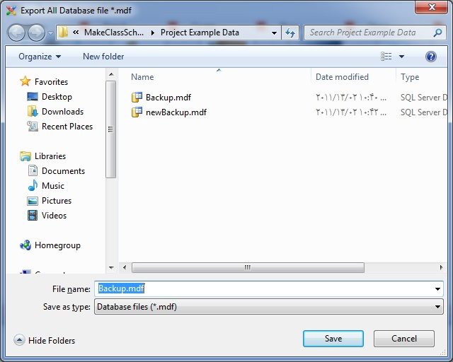

If the program has information and you
want a backup of them to use it later, you can go to the File menu and click
on "Export All Data" option.

* Database file extensions MDF
is.
After selecting the backup file path, a
little wait until the program is closed, and communicate with the database is
disconnected, and deposit it into your path, and program will run
again.